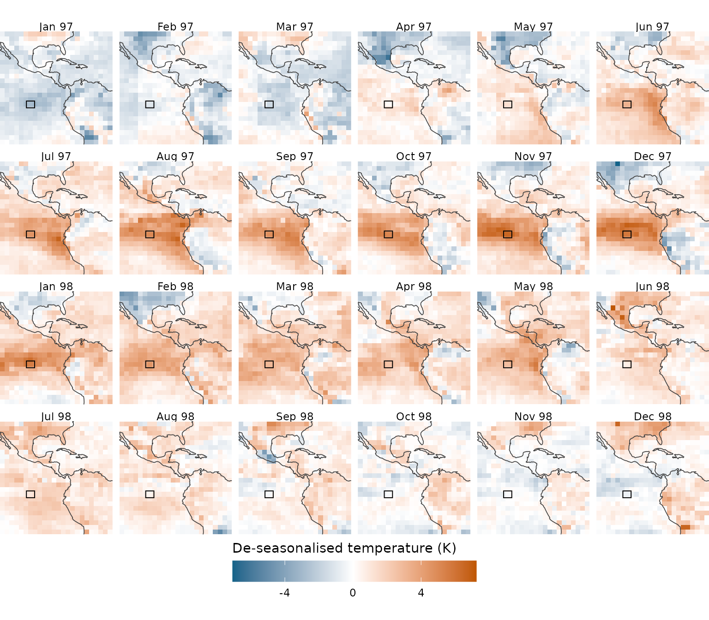
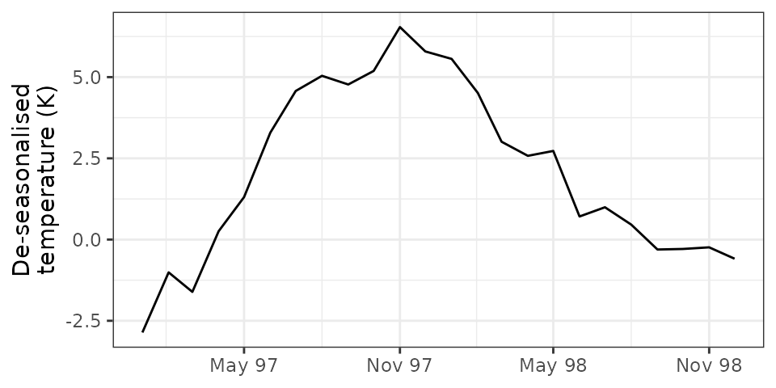
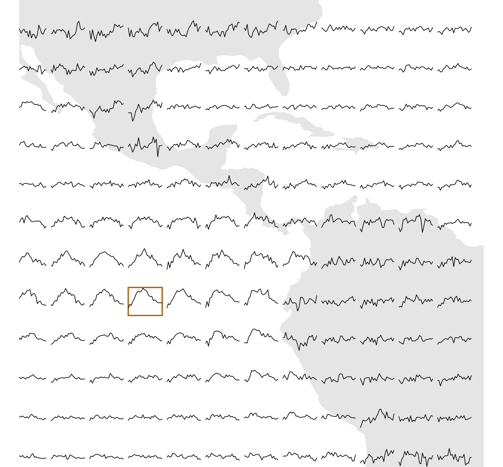
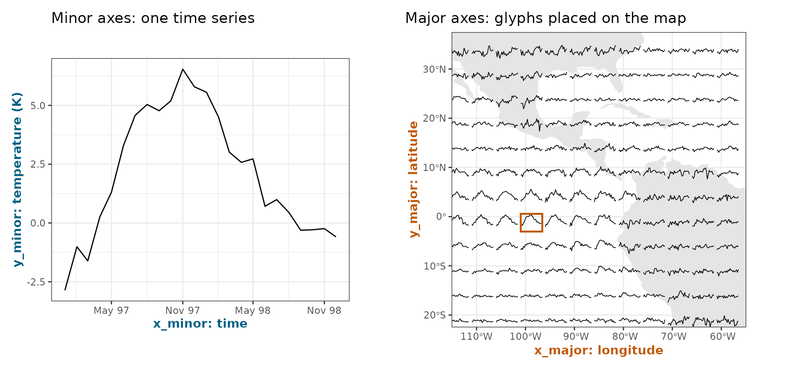

Environmental data often come as many time series recorded at many
locations, and a common way to display them is a series of maps faceted
by time. This vignette shows why such data can benefit from a glyph map,
which draws each location’s time series as a small plot at that
location, and how to make one with geom_glyph(). More
examples of glyph maps are in 4.
Visualization: glyph map examples. Interactive graphics, another way
to link maps and time series, are covered in 5.
Visualization: interactive graphics.
Why glyph maps?
From facets to a glyph map
The nasa data from the GGally package records monthly
atmospheric measurements on a 24 x 24 grid over Central America from
1995 to 2000. Below we remove the trend and the seasonal pattern from
the surface temperature in each grid cell and show the de-seasonalised
temperature for 1997 and 1998, one map per month:

Faceted maps are good at showing the spatial pattern within a month, but it is hard to see how a single location changes over time. To get the time series of the boxed cell, you need to follow it through all 24 panels:

A glyph map (Wickham et al. 2012) draws this time series as a small plot at the cell’s location. Doing this for every location (here, every other grid cell in each direction, so that the glyphs don’t overlap) gives the full glyph map:

What the glyph map shows
Some patterns can be seen in both displays. The 1997–98 El Niño, the warming of the eastern Pacific, is clear in the faceted maps as the band of warm cells along the equator in late 1997, and in the glyph map as the single hump shared by the glyphs in the equatorial eastern Pacific, which rises through 1997, peaks in late 1997, and falls back in 1998. Other patterns are much easier to see in the glyph map. The glyphs over land vary much more from month to month than those over the sea, where the temperature changes smoothly over time. This difference is hard to see in the faceted maps, since it requires comparing how each cell changes from one panel to the next. Because each glyph shows the full time series at its location, a glyph map lets you see the spatial and temporal patterns at once.
The glyph map syntax
Glyph maps were first implemented in the GGally package, where
GGally::glyphs() computes the glyph coordinates as a
separate data step before plotting. cubble now makes glyph maps native
to ggplot2 by providing a ggplot2 extension, geom_glyph(),
and associated tools, geom_glyph_box() and
geom_glyph_line(), so a glyph map can be built layer by
layer like any other ggplot.
geom_glyph() and its four aesthetics
The underlying idea of a glyph map is to transform the temporal
coordinates into spatial coordinates, so that a time series plot can be
displayed on the map. In cubble, geom_glyph() performs this
transformation internally (Equation 1 in Wickham
et al. (2012)) and requires four aesthetics:
-
x_majorandy_major: the spatial coordinates of each location, e.g. longitude and latitude, which place the glyph on the map, and -
x_minorandy_minor: the coordinates of the time series inside the glyph, e.g. time and the measured variable.
data |>
ggplot() +
geom_glyph(aes(x_major = ..., y_major = ..., x_minor = ..., y_minor = ...))The figure below illustrates the two sets of axes with the boxed grid
cell from the glyph map above. On the left is its time series, drawn on
the minor axes: time on x_minor and the de-seasonalised
temperature on y_minor. On the right,
geom_glyph() rescales this time series into a box of the
given width and height, and places the box on
the map, centred at the cell’s longitude (x_major) and
latitude (y_major), as the boxed glyph in the full glyph
map. The shape of the time series remains unchanged, so each glyph can
be read as a small time series plot at its location:

Reference boxes and lines
A reference box around each glyph and a reference line through its
middle can be added with geom_glyph_box() and
geom_glyph_line(). Since all three geoms use the same four
aesthetics, we recommend specifying the aesthetics once, inside
ggplot():
data |>
ggplot(aes(x_major = ..., y_major = ..., x_minor = ..., y_minor = ...)) +
geom_glyph_box() +
geom_glyph_line() +
geom_glyph()Adding other layers
With the glyph aesthetics specified in ggplot(), every
other layer will inherit them. For layers that don’t use the four glyph
aesthetics, such as an underlying map drawn with geom_sf(),
set inherit.aes = FALSE:
data |>
ggplot(aes(x_major = ..., y_major = ..., x_minor = ..., y_minor = ...)) +
geom_sf(data = MAP_DATA, inherit.aes = FALSE) +
geom_glyph_box() +
geom_glyph_line() +
geom_glyph()Everything else in ggplot2
Since geom_glyph() is a ggplot2 layer, everything else
in the ggplot2 framework works as usual. For example, you can map a
variable to colour with aes(colour = ...), change the
colours with a scale_colour_*() function, and customise the
look of the plot with theme():
data |>
ggplot(aes(x_major = ..., y_major = ..., x_minor = ..., y_minor = ...,
colour = ..., group = ...)) +
geom_sf(data = MAP_DATA, inherit.aes = FALSE) +
geom_glyph_box() +
geom_glyph() +
scale_colour_brewer(...) +
theme(...)When mapping a discrete variable to colour, also set
group to the location ID, so that each location is drawn as
its own glyph rather than one line per colour. See 4.
Visualization: glyph map examples for a full example.